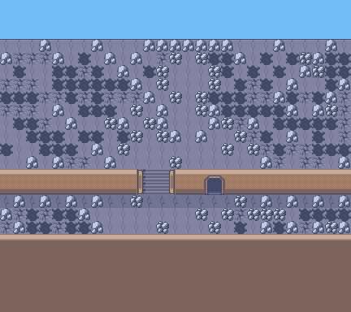

Hoenn · Höhle, Wald oder Turm
Himmelturm
Hoenn5 wilde Pokémon1 Item
Wilde Pokémon
Die Chancen sind die Werte, die das Spiel hier verwendet.
EG, 2S
Höhle
| Pokémon | Chance |
|---|---|
| 30 % | |
| 30 % | |
| 25 % | |
| 15 % |
4S
Höhle
| Pokémon | Chance |
|---|---|
| 30 % | |
| 30 % | |
| 19 % | |
| 15 % | |
| 6 % |
Besondere Pokémon
Geschenke, feste Begegnungen und Tausche an diesem Ort. Das Level ist das Level im Spiel.
Items
Itembälle und versteckte Items an diesem Ort.
 SeelentauverstecktAußenbereich
SeelentauverstecktAußenbereich
Karten


